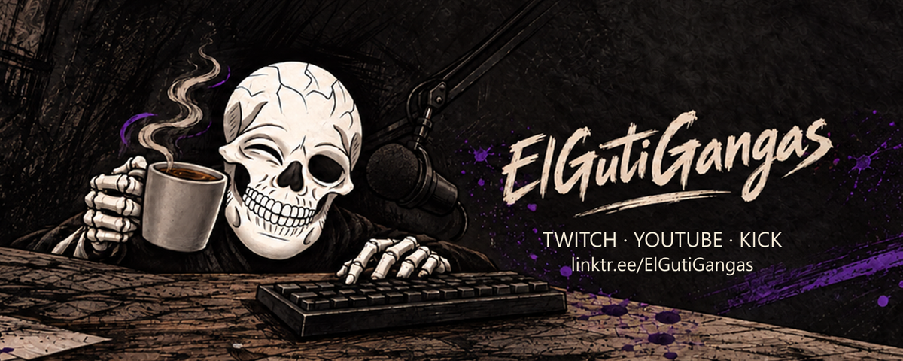
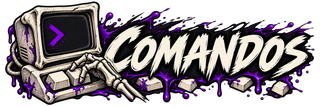
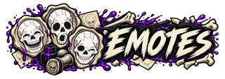

Nos vemos
en el chat.
Comandos a mano y todas las caras de Blanco para acompañar el directo.
Conocer los emotes

¿Qué escribo?
Busca un comando, entiende qué hace y copia lo que necesitas.
Abrir la guía de comandos
Una cara para cada momento.
La familia aprobada de Blanco, sus gestos y cómo ver los emotes en el chat.
Abrir la galeríaEl mismo Blanco.
Mucho que decir.
Cargando la familia de emotes…
Cargando la instantánea de Twitch…
Cargando ilustraciones…